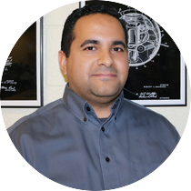

|
||||||||||||

|
Dale CoalsonA kindred spirit full of love for his students. He is responsible for the development of the new MakerSpace building at the Science Academy. Through his love and passion for hard labor and digging, he teaches our Sci-Tech seniors Civil Engineering and Architecture (CEA) using AutoDesk Revit.Email: dale.coalson@stisd.net |
David WoodDespite assigning some of the most tedious coding projects, David Wood is able to make his students laugh more than they've ever experienced. His Southern accent compliments his sense of humor in an indescribable way, and his understanding of computer science is evident from his years of teaching. Being one of the original teachers of the Science Academy, it's safe to say Sci-Tech wouldn't be the same without him.Email: david.wood@stisd.net |
Esthela PachecoAlthough Pacheco has only taught at the Science Academy for three years, her biomedical science classes truly give the STEM diversity we've needed for decades. Without her fake dummies bringing life into forensics, biomedical engineering would never be as exciting as it is.Email: esthela.pacheco@stisd.net |
Gene McGeeHis passion for fishing and hunting is parallel to his eye for the world around. He continues to see the world through his outdoor experiences, leading him towards mechanical engineering. He currently teaches Principles of Engineering where he uses RobotC and VEX Robotics to help our students get hands-on experience as an engineer.Email: gene.mcgee@stisd.net |

|
Harry StoutWithout his years working in the Navy, he would have never found his love and passion for engineering. He continues to learn about himself by teaching incoming freshmen and sophomores about engineering design using AutoDesk Inventor. He's notorious for his one liners and his extensive projects.Email: harry.stout@stisd.net |
Jim KonecnyAfter working in the aerospace industry for years, he's finally able to spread his love for flying planes and projectiles to his students. His soaring wind tunnels and intricate laser cutters create a substitute makerspace for the time being. In fact, if any EDD groups need advice on their projects, Konecny is often the first person they go to.Email: jim.konecny@stisd.net |
Nelly HoustonWith thousands of resistors and OR gates in her back closet, it almost seems as if her supplies are endless. Her breadboard projects cluttered with multi-color wires give the true "geeky" feeling the Science Acadmey has been looking for. And on her off-time, her hobbies include conversing with her classmates and working on the National Honors Society.Email: nelly.houston@stisd.net |

|
Oscar ValdezThrough his love for PubG and Fortnite, he's able to spread the gift of EDD to his students by relating to his students on a personal level. He continuously emphasizes that EDD should be taken as an experience instead of class. All of his students can agree that without his encouragement and support, there would be no EDD Presents 5.0.Email: oscar.valdez@stisd.net |
|  | Ricardo RodriguezWith VEX Robotics under his belt, he's able to assist students by supplying them with an endless amount of gears, nuts, bolts, and motors. His degree in electrical engineering also makes him a great Digital Electronics teacher, and without in eye for design, he would never be able to teach Introduction to Engineering Design with ease.Email: ricardo.rodriguez@stisd.net |